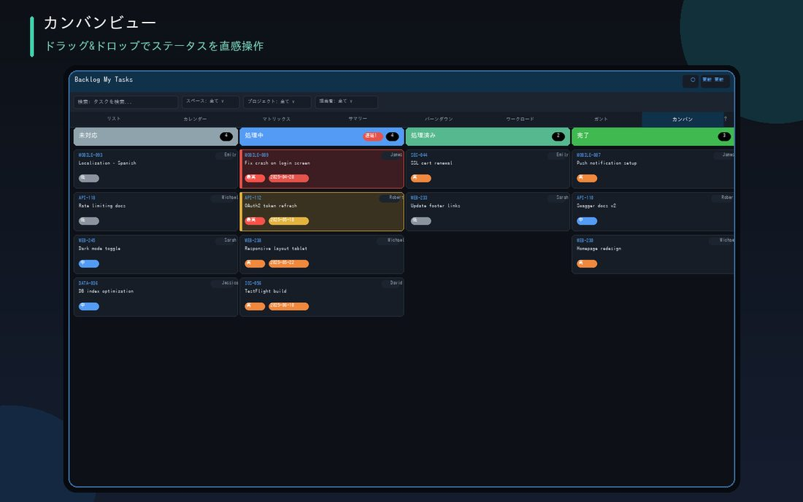

以未處理、處理中、已處理、已完成4個欄位，一眼掌握整個團隊的進度。只需移動卡片，即會即時反映到Backlog。

一眼掌握未處理、處理中、已處理、已完成
只需拖動卡片，即時反映到Backlog
逾期以粉紅色、今日到期以黃色顯示，令高風險任務更顯眼
可為每個欄位設定同時進行的上限件數，超過時欄位標題會以警示色顯示
在儀表板管理分頁中，以看板形式顯示所選項目的全部任務。子任務狀態變更時，母任務的狀態也會自動連動更新。
只需分享畫面，即可一眼掌握所有人的狀況，狀態變更亦可即場以拖放完成。